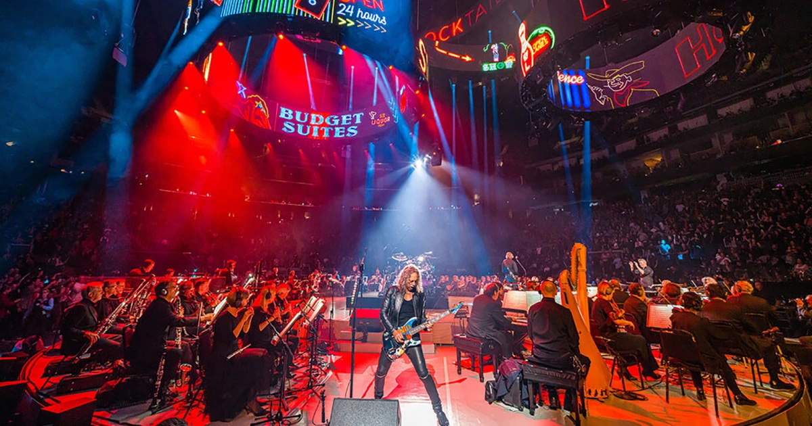
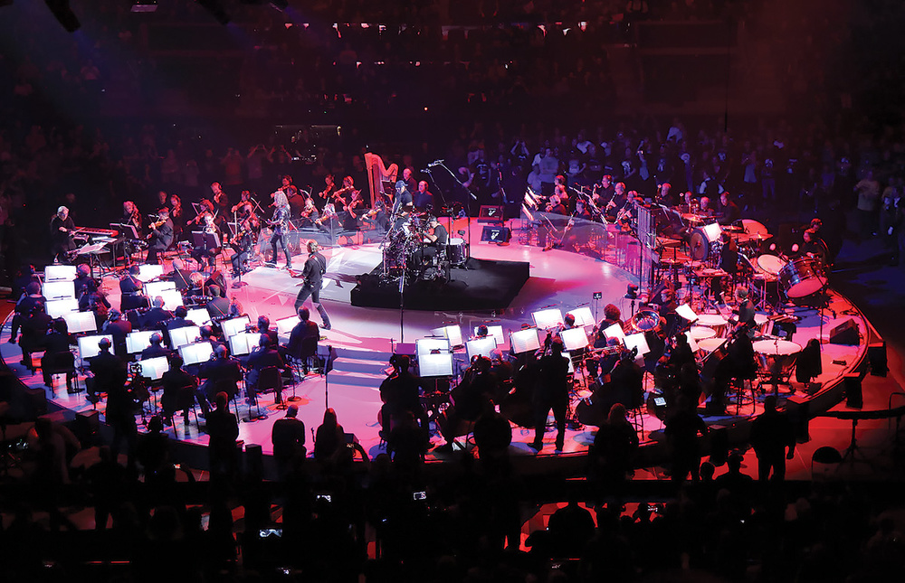
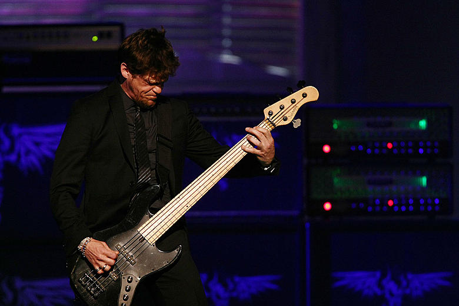

Az S&M (Symphony & Metallica) egy 1999-es koncertfilm és élő album, amelyen a Metallica a San Francisco Symphony-val lép fel. A koncert különlegessége az, hogy a metal zenét szimfonikus hangzással ötvözi, így a klasszikus és a heavy metal világ találkozik.
A koncert rendezője Wayne Isham volt, az élő felvétel 1999. április 21-22-én készült a San Francisco-i Warfield Theatre és Fillmore helyszíneken. A film és az album a Metallica legnagyobb slágereit mutatja be új, grandiózus hangszereléssel.
Az S&M album és film a Metallica zenéjét új dimenzióba helyezte, és azóta ikonikus darabnak számít a zenekar történetében.
Koncert – Dalok
| Dalok a koncerten |
|---|
| Enter Sandman |
| Sad But True |
| The Unforgiven |
| Nothing Else Matters |
| Wherever I May Roam |
| One |
| Master of Puppets |
| Battery |
| For Whom the Bell Tolls |
| Fade to Black |
| Harvester of Sorrow |
| Last Caress / Green Hell |
| Seek & Destroy |


